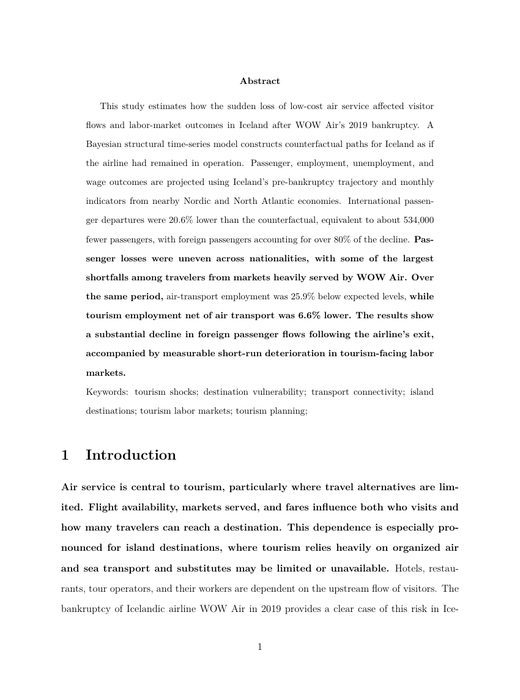

Latest manuscriptRevise and resubmit · Tourism Planning & Development
WOW Factor: Tourism Transport Disruption and Destination Impacts in Iceland
A Bayesian structural time-series analysis estimates counterfactual passenger and labor-market outcomes after WOW Air’s 2019 bankruptcy. The manuscript reports international departures 20.6% below the counterfactual—about 534,000 fewer passengers—and measurable declines in tourism-facing employment.
Download full manuscript